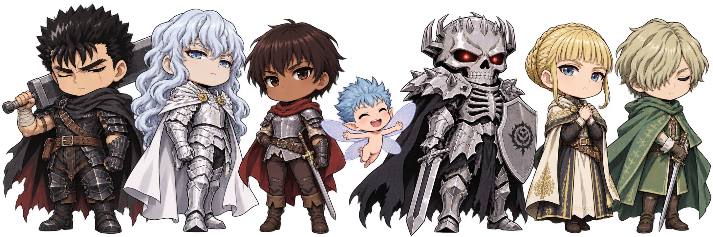

Creator
Kentaro Miura — original manga creator and illustrator.
A dark fantasy epic about survival, ambition, companionship, betrayal and the struggle to preserve one's humanity in a brutal world. This archive separates the manga's full narrative from the distinct anime adaptations.

Berserk is a dark fantasy manga created by Kentaro Miura. Its central narrative follows Guts, a mercenary swordsman whose life is shaped by violence, difficult alliances, personal loss and a relentless effort to determine his own fate. The story places individual ambition and human bonds against a world where political conflict and supernatural forces intersect.
Kentaro Miura — original manga creator and illustrator.
Manga, serialized beginning in 1989; the story continued after Miura's death under supervision from his close collaborator Kouji Mori and Studio Gaga.
Dark fantasy, action, adventure, psychological drama and tragedy.
Guts, Griffith, the Band of the Hawk, and the consequences of ambition, loyalty, sacrifice and survival.
The setting resembles a late-medieval world of kingdoms, mercenary companies, warfare, religious institutions and social hierarchy. Its ordinary political and military struggles gradually become entangled with a hidden supernatural order.
Geography, political chronology, cosmology and the rules governing supernatural beings require separate, source-checked entries. The archive will distinguish what characters believe from what the narrative establishes.
Midland is a feudal kingdom whose authority is expressed through a royal court, aristocratic houses, castles, towns and a military hierarchy. Its wars create the conditions in which mercenary companies can rise. The Band of the Hawk begins as a comparatively small company and becomes a major military force through repeated campaigns and Griffith's political ascent. The story later widens beyond Midland to include the Kushan Empire and territories shaped by different political and religious traditions.
The setting is not a single uniform medieval society. Local customs, military organization, religious authority and access to resources vary between regions. Travel routes, fortified settlements, battlefields, villages and courts each expose a different layer of the world. War affects civilians as well as soldiers: displacement, famine, disease, forced service and the collapse of local security are recurring consequences.
Ordinary human life occupies the physical world, but Berserk gradually establishes an overlapping astral dimension inhabited by spirits and other supernatural beings. The boundary between these layers is not always equally visible or accessible. Certain events and places make supernatural phenomena perceptible to humans, while other beings can interact with the physical world under particular conditions. The later story depicts a weakening separation between these realms, with consequences for geography, ecology and daily life.
Political power is distributed among monarchs, nobles, military commanders, religious authorities and armed organizations. The Holy See provides a major religious framework, while Midland's court and military pursue political survival. These institutions can offer identity and order, but they can also produce persecution when fear, dogma or ambition overrides evidence and compassion. The series repeatedly contrasts official explanations with the lived experiences of people subject to institutional power.
Characters sometimes describe supernatural events through religious doctrine, rumor or incomplete knowledge. Those beliefs are part of the worldbuilding, but they should not automatically be treated as objective explanations. This encyclopedia separates what a character believes, what an institution teaches and what the narrative visibly establishes.
Introduces Guts in a period of relentless pursuit and establishes the series' dark supernatural atmosphere.
Revisits Guts' earlier life, his meeting with Griffith and the Band of the Hawk, and the relationships that shape the central tragedy.
Follows the aftermath of the Eclipse and the expanding consequences of the supernatural conflict.
Broadens the story into large-scale conflict, shifting alliances and the changing political landscape.
Explores a transformed world in which the boundaries between human society and the supernatural become increasingly unstable.
Arc summaries, chapter ranges and exact chronology are pending a dedicated manga-reference pass.
The manga opens with the Black Swordsman material, introducing an older, hardened Guts before moving into the extended Golden Age flashback. The flashback is structurally important: it explains the relationships, decisions and losses that give the opening chapters their emotional meaning. After the Golden Age returns to the post-Eclipse present, the story proceeds through the Conviction, Millennium Falcon and Fantasia arcs. Read the manga in publication order; the flashback is deliberately placed after the opening hook.
These are broad narrative landmarks rather than a substitute for a chapter-by-chapter chronology. Exact episode and chapter references should be checked against the edition being catalogued because Berserk distinguishes individual installments, story chapters and larger arcs.
Opening-era Guts and the consequences of his war against demonic forces.
The formation and rise of the Band of the Hawk, followed by the defining catastrophe.
Survival, faith, fear and the search for Casca amid social and supernatural upheaval.
War, leadership, the gathering of companions and a changing world order.
The consequences of a world reshaped by supernatural convergence.
The opening follows Guts as a feared wanderer hunting Apostles. Its episodic confrontations introduce the Brand of Sacrifice, the Beherit, the God Hand and the brutal cost of opposing supernatural predators. The arc presents Guts as frightening and emotionally closed before the later flashback explains how he became this person.
The extended flashback follows Guts from his childhood into the Band of the Hawk. It charts the company's military rise, Griffith's ambition, Guts's search for an independent purpose and the complicated bonds among Guts, Griffith and Casca. The Eclipse is the arc's catastrophe and the turning point on which the later narrative depends.
After the Eclipse, Guts's pursuit of vengeance collides with the suffering of ordinary people, religious persecution and the crisis surrounding Casca. The Lost Children material explores the vulnerability of children and the ways fear can distort innocence. The Binding Chain and Birth Ceremony material expands the Holy See's authority, introduces Farnese and Serpico more fully, and brings Guts's personal struggle into a larger social crisis.
The narrative broadens into war, the Kushan conflict, the return of Griffith to the physical world and the formation of Falconia. Guts's group gains new members and confronts dangers that cannot be answered by swordsmanship alone. The arc combines military spectacle with the changing metaphysical order.
The Fantasia period explores the consequences of the world's transformation, the journey to Elfhelm and Casca's recovery. The destruction of the island's sanctuary and the group's separation create the conditions for the next journey east. The manga continues beyond Kentaro Miura's death under the announced credit arrangement of original work by Miura, art by Studio Gaga and supervision by Kouji Mori.
Arc labels and chapter boundaries can vary slightly across reference lists; this archive uses the broad story divisions and avoids treating every subchapter as a separate major arc.
Each principal character has an individual profile covering identity, personality, combat abilities, limitations, chronology, relationships, analysis and adaptation continuity.

A survivor of a violent childhood whose life is shaped by warfare, the Band of the Hawk, the Eclipse and the difficult work of protecting others.
A charismatic commander whose extraordinary ambition and pursuit of a kingdom transform the lives of everyone who follows him.
A capable warrior and commander whose history, agency, trauma and recovery are central to the emotional story of Berserk.
An elf who accompanies Guts and offers healing, emotional contrast and occasional humor amid the violence of the Black Swordsman journey.
An enigmatic figure who appears at pivotal moments and possesses knowledge of the supernatural forces shaping the world.
A noblewoman whose rigid religious certainty and fear give way to a difficult process of self-discovery, responsibility and practical care.
A controlled and observant swordsman whose loyalty to Farnese is rooted in a complicated family history and a protective promise.
SCOPE NOTE: This is the principal-character index currently developed for this archive, not an exhaustive list of every named character in the manga.
The series includes apostles, the God Hand, the Beherit, the Brand of Sacrifice, astral entities and layers of reality beyond ordinary human perception.
These concepts will be documented individually with their conditions, limits, known examples and chapter evidence. The archive will not treat every supernatural claim made by a character as confirmed fact.
Most human fighters rely on training, physical conditioning, weapons, armor, formation tactics and experience. Guts is exceptional because of his strength, endurance, reflexes and willingness to adapt under pressure, but he remains vulnerable to injury, fatigue and the limits of his body. Knights, mercenaries, archers and commanders are shaped by equipment and battlefield context rather than one universal ranking system.
A Beherit is a supernatural object associated with a moment of extreme crisis. Under the conditions established by the story, a Crimson Beherit can summon the God Hand and offer a person the possibility of transformation through sacrifice. Apostles are humans who have undergone such a transformation and gained monstrous forms and abilities. Their powers differ widely; the term does not imply identical strength, intelligence or limitations.
The Brand marks those offered during an Eclipse. It attracts hostile supernatural entities and causes the branded person to experience bleeding and pain when such forces draw near. The Brand is not a power-up or a voluntary mark; it is a sign of being designated as prey within the supernatural order.
The God Hand occupies a distinct level of the setting's supernatural hierarchy. Its members influence events through forces associated with causality, temptation and sacrifice. The story raises questions about fate and human choice without reducing every action to a simple predetermined script. Characters still make decisions, but those decisions occur within a world where unseen forces and long historical patterns exert pressure.
Later arcs develop magic through elemental spirits, magical practitioners and the interaction between the physical and astral worlds. Schierke's training and the witch Flora's teachings provide a more systematic view of magic than the fearful rumors common among ordinary people. Magical ability requires knowledge, concentration and relationships with spiritual forces; it is not interchangeable with apostle transformation.
The Berserker Armor allows Guts to continue fighting through pain and injuries that would otherwise stop him. Its effects are dangerous: it can force damaged parts of his body into action and suppress warning signals, while threatening his physical integrity and mental control. The armor illustrates the series' recurring question of whether power gained through self-destruction can truly protect what matters.
Each entry has a dedicated organization dossier covering its purpose, origin, structure, notable members, story history and significance.
Griffith's original mercenary company and the central group of the Golden Age.
The feudal kingdom whose court and wars shape the Hawks' rise.
A major religious institution whose doctrines and inquisitorial authority shape the Conviction arc.
Griffith's later military force, gathering human soldiers and supernatural allies.
Relationship status and development vary by story period; individual profiles should distinguish the Golden Age, post-Eclipse and later manga continuities.
Their bond begins through a clash of wills and develops into comradeship, admiration and mutual dependence within the Hawks. Griffith's dream gives the company direction, while Guts becomes a person whose independence challenges Griffith's sense of control. Their relationship cannot be reduced to simple friendship or rivalry: it is shaped by unequal authority, personal longing, ambition and a catastrophic betrayal.
Guts and Casca move from distrust and conflict toward mutual recognition, intimacy and shared vulnerability. Their relationship develops in the context of the Hawks and is profoundly affected by the Eclipse. Casca's trauma and later recovery must be treated as her own story, not merely as a plot device for Guts. Their bond is meaningful, but healing does not erase the past or guarantee an uncomplicated reunion.
Casca's loyalty to Griffith is rooted in the role he played in her survival and in the identity she built as a member and commander of the Hawks. Her feelings become more complicated as her relationship with Guts changes. The Eclipse destroys the trust and meaning that had structured her life.
The Hawks function as a chosen community built through shared danger, discipline and loyalty. Judeau, Pippin, Corkus and other members contribute different forms of competence and perspective. Their deaths during the Eclipse give the sacrifice its human scale: the group is not an abstract army but a network of individual lives and relationships.
Puck offers compassion and levity; Farnese confronts the collapse of her inherited certainty; Serpico brings tactical intelligence and a complicated protective loyalty; Isidro seeks strength and recognition; Schierke provides magical knowledge and emotional steadiness; and others widen the group's experience of care and cooperation. The traveling party gradually becomes a counterweight to Guts's isolation.
Relationships change across story periods. A character's role during the Golden Age may differ sharply from their later position. Profile pages should therefore identify the period being discussed and distinguish established events from interpretation.
Television adaptation focused primarily on the Golden Age material.
Film trilogy retelling the Golden Age storyline; later assembled in a Memorial Edition.
Television continuation adapting later manga material, with notable visual and adaptation differences.
Episode lists, adaptation coverage and differences will be checked against official release records.
The manga is the fullest version of Berserk and the reference point for the story's chronology, character development and supernatural rules. It began in 1989 and continued after Kentaro Miura's death. The continuation was announced by Hakusensha in June 2022: the work is credited as original work by Miura, art by Studio Gaga and supervision by Kouji Mori. The publisher's announcement explains that Mori and the studio would continue only with story material Miura had discussed with them, while acknowledging that the result could not reproduce Miura's work perfectly.
The 1997 television series is a 25-episode adaptation centered on the Golden Age. It introduces the world and the Hawks, but its selection and compression of material mean it is not a complete adaptation of the manga. Its ending leaves the audience at the Eclipse rather than adapting the full aftermath.
The three theatrical films released from 2012 to 2013 retell the Golden Age in a more compressed format, with different staging, pacing and visual presentation from the 1997 series. The Memorial Edition later presented the film material as a television-format version with additional adjustments. These versions are alternate adaptations of overlapping source material, not sequential seasons.
The later television series moves into post-Golden Age material, including the Conviction and early Millennium Falcon periods. It assumes substantial prior knowledge and omits or compresses material. Its digital visual style and editing differ markedly from the earlier adaptations.
No anime adaptation covers the complete manga. Character introductions, omitted subplots, violence, chronology and supernatural explanations can differ by version. For a full understanding of the narrative, the manga remains the central reference; adaptation pages should identify exactly which material is included rather than imply that one series is a complete substitute.
Major interpretive threads include agency versus determinism, ambition and its costs, trauma, chosen family, loyalty, revenge, faith, moral compromise and the struggle to remain human under extreme conditions.
Analysis will be separated from plot fact, and competing interpretations will be identified rather than presented as official authorial intent.
Berserk repeatedly asks whether a person can choose a meaningful life inside systems of violence, inherited power and supernatural influence. Causality creates pressure and patterns, but the characters' choices remain morally consequential. The tension between constraint and agency is more complex than either total free will or total predestination.
Griffith's dream creates extraordinary discipline and collective purpose, but it also becomes a measure by which he judges the value of other lives. The series distinguishes having a dream from treating people as instruments for achieving it. The moral crisis is not ambition alone; it is ambition detached from responsibility.
Violence leaves lasting physical and psychological consequences. Guts's rage, Casca's trauma and Farnese's changing sense of self are not resolved by a single victory. Recovery appears as difficult, relational work that requires safety, patience, trust and the recognition of a person's agency.
The story's bleakness makes small acts of care significant. Guts's later companions do not erase his past, but they challenge the belief that isolation is the only way to survive. The group becomes a practical and emotional network in which strength can mean protecting, listening, teaching and relying on others.
The Holy See and its agents show how religious authority can provide structure while also enabling cruelty when fear is treated as proof and dissent as corruption. The narrative does not reduce every believer to a villain; it examines how institutions and leaders shape belief into either compassion or persecution.
Physical appearance does not provide a reliable measure of moral worth. Humans can commit monstrous acts, while beings outside ordinary humanity can display tenderness or loyalty. Berserk repeatedly challenges the assumption that power, social rank or species determines a person's ethical value.
These are readings supported by recurring narrative patterns, not claims that the author supplied one definitive moral formula. The work leaves room for disagreement about fate, responsibility, love, violence and the possibility of healing.
After Griffith is rescued from imprisonment, his physical condition has destroyed the future he once pursued. When the Beherit activates, the God Hand offers him a path to rebirth and the fulfillment of his ambition, at the cost of sacrificing the Band of the Hawk. Griffith accepts. His comrades are branded and massacred by Apostles, and he is reborn as Femto, the fifth member of the God Hand. Guts and Casca survive, but both are left profoundly traumatized; Guts loses his left forearm and right eye while trying to reach Casca.
The 1997 television adaptation ends in the aftermath of the Eclipse and then shows Guts at Godo's home, taking up the identity and equipment associated with the Black Swordsman. It does not fully depict the rescue from the Eclipse or explain Casca's immediate fate. The ending is therefore a deliberate cliffhanger rather than the conclusion of the complete story. It connects the Golden Age tragedy to the darker Guts introduced at the beginning of the series.
The manga continues beyond this point. The Skull Knight intervenes during the Eclipse, allowing Guts and Casca to escape the sacrificial realm. The Brand remains, however, and continues to expose them to supernatural danger. Guts begins pursuing Apostles and the God Hand, but his journey gradually becomes more complicated than revenge: protecting Casca, accepting companions, and confronting the damage that violence has done to him become central concerns.
No definitive final ending has been published. Kentaro Miura died in 2021 before completing the manga. The series resumed in 2022 with art by Studio Gaga and supervision by Kouji Mori, based on what Mori says Miura had shared with him. The final outcome of Guts's struggle, Griffith's ambition, and the world's fate therefore remains unresolved in the published story. Do not treat the 1997 anime's Eclipse cliffhanger as the manga's ending.
Interpretive note: the Eclipse can be read as the catastrophic collision of Griffith's ambition with the lives and loyalties of the people who trusted him. That reading is analysis, not a claim that one official interpretation exhausts the scene.
The Eclipse is the central rupture between the Golden Age and the post-Eclipse narrative. Griffith, physically broken after imprisonment and desperate to recover the future he imagined, accepts the God Hand's offer and sacrifices the Band of the Hawk. The transformation into Femto is not simply a change of body: it is a moral and relational rupture that makes the former commander responsible for the destruction of those who trusted him.
Guts survives the Eclipse with the Brand of Sacrifice and turns toward hunting Apostles and pursuing Griffith. Revenge gives him direction, but it also consumes his attention and places strain on his body and relationships. The later story repeatedly tests whether revenge can coexist with protecting Casca and the people who travel with him.
Casca's condition after the Eclipse shapes much of the later journey. The effort to create safety for her and eventually restore her memories involves companions with different kinds of knowledge and care. Her recovery is a major development, but it does not undo the violence she experienced or automatically resolve the emotional consequences for Guts and herself.
Griffith's return to the physical world changes the political landscape. Falconia becomes a powerful center that offers refuge and apparent order amid a world transformed by supernatural upheaval. The contrast between public salvation and the hidden costs of Griffith's rise is central to the story's treatment of power, legitimacy and appearances.
Elfhelm offers a temporary sanctuary and a setting for Casca's recovery, but it does not provide a permanent resolution. The events that follow separate the group and leave Guts in a state of profound grief and helplessness. The story moves into an eastern journey rather than concluding with a final victory.
No definitive ending has been published. After Miura's death in 2021, Hakusensha announced that the manga would resume under the credit arrangement: original work by Kentaro Miura, manga by Studio Gaga and supervision by Kouji Mori. The publisher stated that the continuation would be based on what Miura had shared with Mori and the studio, while acknowledging the limitations of reconstructing unpublished material. The encyclopedia must therefore distinguish Miura's completed chapters from the posthumous continuation and must not present an unresolved plot as a completed ending.
Berserk does not present a simple lesson or a single moral announced by the author. Its central conflicts invite several connected reflections about how people live under suffering, power, ambition and uncertainty.
Griffith's ambition gives his life direction, but the Eclipse exposes the moral horror of valuing a personal dream above the lives and autonomy of those who trusted him. The story asks what ambition becomes when other people are reduced to tools or sacrifices.
Guts repeatedly fights against forces that seek to define or consume him. Yet the story also shows that living only through rage can become another form of captivity. Agency includes choosing what to protect, when to accept help, and how not to let an enemy determine the whole meaning of one's life.
The Band of the Hawk and Guts's later companions demonstrate that bonds can give people purpose, courage and a reason to endure. Those bonds do not erase trauma or guarantee safety, but they challenge the idea that survival must always be solitary.
The story depicts severe psychological and physical consequences of violence. Characters do not recover on command, and healing is neither linear nor guaranteed. Casca's experience in particular should be understood as harm inflicted on her, never as a failure or moral weakness on her part.
Physical power and the ability to dominate do not automatically make someone morally admirable. The narrative repeatedly contrasts destructive power with restraint, responsibility, loyalty and the difficult work of protecting others.
One defensible reading of Berserk is that a meaningful life is not measured only by conquest or the fulfillment of a dream. It is also shaped by the choices a person makes toward others, the responsibility they accept, and their effort to retain compassion and agency in a world that often rewards brutality. The story does not promise that goodness guarantees victory; it explores why choosing humanity can still matter when victory is uncertain.
This section is critical interpretation, not a definitive statement of Kentaro Miura's personal intent. Readers may reasonably emphasize different themes.
Griffith's ambition gives his life direction, but the Eclipse exposes the moral horror of valuing a personal dream above the lives and autonomy of those who trusted him. The story asks what ambition becomes when other people are reduced to tools or sacrifices.
Guts learns to survive through vigilance and violence, but survival alone cannot provide belonging, trust or peace. His later journey shows that a life built entirely around retaliation can become another form of captivity.
Physical power can protect others, but it can also cause harm when guided only by anger. The Berserker Armor makes this conflict visible: increased fighting capacity comes with danger to the person using it. Strength is not measured only by what someone can defeat, but also by what they choose not to destroy.
Casca's recovery illustrates that trauma is not a failure of character and cannot be erased by demanding that a survivor simply move on. Safety, patience, support and respect for agency matter. The same principle applies to the many characters whose histories are shaped by coercion and violence.
Guts's traveling party demonstrates that relying on others is not automatically weakness. Mutual care does not remove danger, but it distributes burdens and creates reasons to continue beyond revenge.
Kingdoms, armies and religious authorities may claim to provide order or salvation. The story asks whether those claims are credible when institutions persecute the vulnerable, conceal wrongdoing or demand unquestioning obedience.
Berserk repeatedly separates outward form from moral character. A monster may show tenderness; a respected leader may commit atrocity. Ethical judgment requires attention to actions and responsibility rather than rank, reputation or appearance.
The series does not promise that suffering will be neatly repaired. It nevertheless gives weight to small acts of protection, loyalty, teaching and companionship. Hope appears not as certainty of victory, but as a reason to keep choosing care in a hostile world.
The moral of the story: A dream does not excuse sacrificing others. Pain does not make cruelty inevitable. Real strength requires responsibility, and even in a brutal world, companionship and compassion remain choices worth defending.
Current edition: Initial encyclopedia structure and series overview.
Pending: chapter-level chronology, detailed character dossiers, complete faction index, supernatural mechanics, episode guide, adaptation comparison and linked citations.
Artwork: intentionally deferred until the written pages are complete.
Arc divisions are presented as broad editorial groupings. Subchapter names and chapter boundaries can differ between catalogues, so exact ranges should be checked against the Japanese and English collected editions before being used as definitive indexing data. Anime adaptations cover overlapping portions of the manga and omit or rearrange material; the manga remains the primary continuity reference.
Editorial standard: cite publisher statements for publication and production credits; use the manga itself for canon; label interpretation as analysis; and do not infer an unpublished ending or undocumented authorial intention.